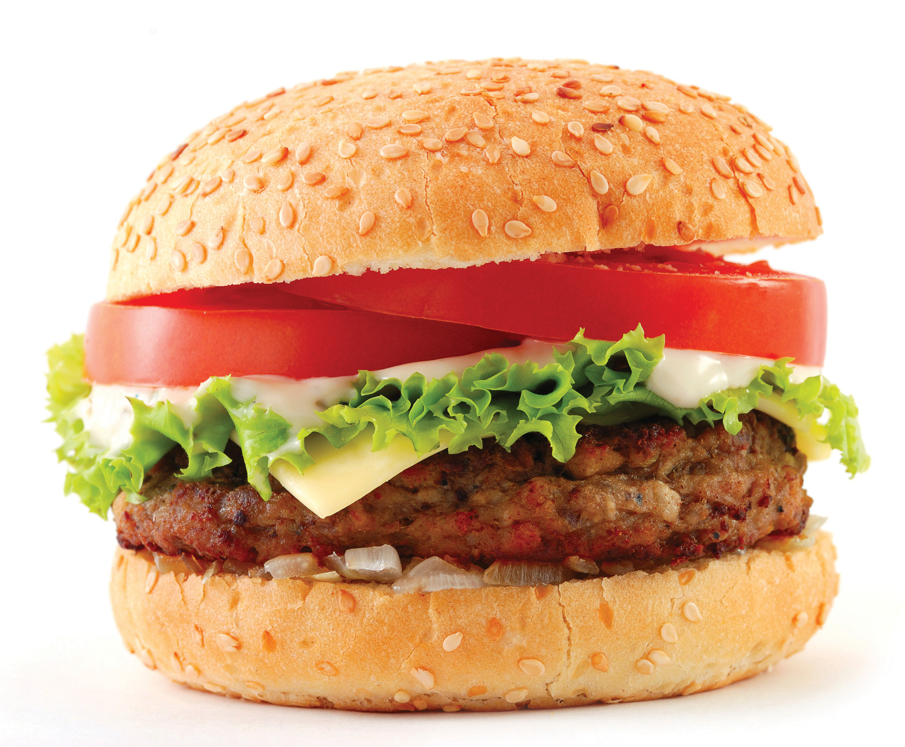

Figure 4.2 Life Cycle of a Mobile Phonehttp://www.unep.fr/shared/publications/pdf/DTIx1208xPA-LifeCycleApproach-Howbusinessusesit.pdf.
Source: United Nations, http://www.unep.fr/shared/publications/pdf/DTIx1208xPA-LifeCycleApproach-Howbusinessusesit.pdf.
Sustainability involves taking a holistic perspective to understand the true short-term and long-term impacts of a business activity. Life cycleA view of a process from its beginning to its end. thinking has emerged as a useful tool in sustainability to consider the total impacts of an activity, product, or service from its origin to its end. This differs from conventional business practices in which the focus has traditionally been on more immediate factors, such as cost, quality, and availability in the supply chain. Life cycle thinking still takes into account these factors but considers them over a product’s lifetime. While conventional business practices have given limited consideration to disposal costs, life cycle thinking considers the impacts of disposal to be an important part of the overall process of product or service provision.
Life cycle thinking in a business context considers business activities using a “cradle to graveA term used in life cycle thinking that represents the consideration of a specific entity or activity from the process of activities leading to its inception to its disposal.” perspective. Cradle to grave starts by considering the impacts of raw material extraction and other inputs. It considers transportation of inputs to the organization and the impacts of the transformation process into a useful product or service that occur at the organization. It then considers transportation from the organization through the use of the product or service up to the ultimate disposal. Each step in the life cycle features a specific focus on inputs and outputs, such as raw materials and waste.
Life cycle thinking came into attention in the 1960s, when life-cycle-based accounting was first used to account for environmental emissions and economic costs associated with various energy technologies over their life cycle. Life cycle thinking has evolved as a sophisticated method for businesses to consider their environmental and social impacts.
The management philosophy that integrates a comprehensive life cycle approach for organizations in managing their value chain is called life cycle management (LCM). A value chain is the connected activities that an organization undertakes in providing a product or service, with each interconnected activity adding value. LCM is a systematic progress of organizing, analyzing, and managing of sustainability impacts throughout the entire life cycle of a product, process, or activity. LCM can occur at the product or service level or at the entire company level. For example, a company may be interested in managing the life cycle of one of its products to improve sustainability, or it may take a more comprehensive look at the portfolio of activities that it engages in as part of a more far-reaching approach to sustainability. One of the key benefits of life cycle management is that it can alert management to potential “hot spots,” or areas that may be ecologically or socially problematic.
So how might LCM play out in real life? For example, if a company is selecting raw materials for the production of a product, they may have several material options to consider. The company can have a goal of choosing materials that have a higher degree of sustainability, meaning less negative societal impact or greater positive societal impact.
For example, if a product could be produced with three pounds of plastic material or two pounds of wood material, which material selection would result in lower pollution emissions per unit of product produced? Which would use less water? The impacts may vary depending on what other materials are required; for example, wood may require paint, while plastic would not. What about the quality of labor conditions for where the wood is harvested versus where the plastic was produced?
Materials that do not have environmental and social impact do not exist; every material has some form of impact. LCM can be used to manage for ecologically and socially preferable products and services.
The following figure illustrates three key phases in a life cycle. Cradle is the resource extraction or impacts of elements that serve as inputs to the process. Throughout the business activity or process, there are inputs and outputs, including water, energy, emissions, and waste. Upon completion of the activity, the finished output of the activity is at the gate. The gate is the defining point when a business output activity is completed and it moves beyond the organization to the next step in its life cycle. For example, the gate at a factory that produces tablet PCs is when the manufactured tablet is boxed and ready to be shipped from the factory. Between the gate and up until the grave is the active use phase of the output of the organization, with the grave being the ultimate disposal of the output.
Two terms that are associated with the life cycle are upstreamThe portion of the value chain that plays a role in the supply chain of the producing organization. This can include extraction and transportation of raw materials. and downstreamThe portion of the value chain that plays a role in a later step in the product life cycle past the producing organization itself. This can include the distribution, use, or disposal of goods. processes. Upstream refers to activities occurring before the organization (supply chain) and downstream refers to activities occurring after the organization (product distribution and product use and disposal). Upstream and downstream can also be in reference to a specific point in the life cycle. For example, a company might be interested in the impacts of all activities “upstream” of a specific supplier. While business life cycles frequently are focused on products or tangible goods, it can also apply to services.
Figure 4.3 Key Components of Life Cycle

Life cycle management does not need to consider the entire life cycle, but instead, it can consider discrete phases or parts. This depends on the needs of the organization. Sometimes, the greatest opportunities for reducing environmental or social impacts may exist outside a company’s own operations and in its supply chain, in which case, life cycle management would focus on its supply chain. Or the assembly of a product might be quite complex, and life cycle management is focused on one specific part of the assembly process.
Different types of life cycle management include the following:
Figure 4.4 A Burger
An example of a life cycle would be a hamburger from a fast food restaurant. There are economic, social, and environmental impacts associated with the harvesting of the wheat, vegetables, and beef required as inputs to the burger. Other impacts would be associated with the napkins, packaging, condiments, and other supplies. There are also impacts associated with the transportation of these inputs to the restaurant. These impacts would be considered upstream.
As part of the transformation process, inputs—such as water, electricity, and raw ingredients—are required. Waste is generated in the process of producing the burger and pollution emissions are generated—for example, carbon dioxide and other forms of air pollution are generated depending on the type of power plant that generated the electricity.
The gate would be the customer receiving the burger at the checkout counter. All impacts after this point would be considered downstream. The useful life of the burger would be the customer eating the burger and the grave would be the disposal of the packaging for the burger in to a trash or recycle bin.
One sustainable performance indicator (SPI) that could be used in life cycle thinking is to consider the total energy used in the production of a product. A 500-calorie cheeseburger requires about 1,700 calories of energy from oil and electricity to make it from the farm to the finished product at a restaurant. This means that it takes more energy to make a burger than we receive from eating the burger. This negative energy flow and its dependence on fossil fuels has its own implications for the sustainability of eating cheeseburgers, but from the restaurant owner perspective, they would be most interested in the areas where changes to their business practices would have the most impact in reducing energy use.
One option for the restaurant owner is to consider which ingredients of the burger have the greatest energy impact in their life cycle. Almost 80 percent of the energy in a cheeseburger comes from all the steps associated with producing, preparing, and cooking of the hamburger meat. This would be an area for the restaurant owner to focus on. Cheese and bread are also two ingredients that require a significant amount of energy in the cheeseburger life cycle.
Cheeseburger ingredient energy requirements.
| Ingredients | Calories | Percentage |
|---|---|---|
| Bread | 229 | 13 |
| Hamburger | 1338 | 77 |
| Lettuce | 22 | 1 |
| Onions | 14 | 1 |
| Pickle | 11 | 1 |
| Cheese | 129 | 7 |
| Total | 1743 | 100 |
Another option for the restaurant owner would be to consider which steps have the greatest energy impact in the life cycle of a cheeseburger. The area with the biggest impact on the energy use of a cheeseburger is agricultural activities, or the activities that occur at the farm. This suggests that the biggest impacts on energy use that a restaurant owner can make actually occur in his supply chain and not at his own facility. This might be a finding that the owner may never have expected or have known about without considering his operations from a life cycle perspective. Only about 10 percent of the energy in the entire cheeseburger life cycle is generated on-site in the cooking of the burger; the other 90 percent comes from various upstream activities.

Cheeseburger life cycle phase energy requirements.
| Step | Calories | Percentage |
|---|---|---|
| Agriculture | 953 | 55 |
| Processing | 251 | 14 |
| Storage | 190 | 11 |
| Transportation | 160 | 9 |
| Cooking | 189 | 11 |
| Total | 1743 | 100 |
One of the key drivers for sustainability reporting relates to greenhouse gas emissions reporting. A popular and specific application of life cycle management is to calculate a carbon footprintThe total set of greenhouse gas (GHG) emissions caused by an organization, event, product, or person.. A carbon footprint measures all greenhouse gas (GHG) emissions associated with the life cycle of a product, service, or business operation, including carbon dioxide, methane, and nitrous oxide.
To help organizations, standards have emerged to assist with the complexities of calculating carbon footprints. As carbon footprints involve the complex interaction of organizations, supply chains, retail activities, and consumers, there is often imperfect data and uncertainty in the total emissions impacts of a business activity. These standards help provide organizations with a consistent way of reporting and addressing common problem areas, such as the double counting of emissions and system boundariesThe defining of what is and is not included in a life cycle..
Organizations are calculating their carbon footprints to
The Greenhouse Gas Protocol (GHG Protocol) Corporate Standard is the most widely used international accounting tool for government and business leaders to understand, quantify, and manage greenhouse gas emissions. This standard was developed by the World Resources Institute and the World Business Council for Sustainable Development, whose working committee includes the World Wildlife Fund, the United Nations, Ford, BP, PricewaterhouseCoopers, the US EPA, and other organizations. The standard was originally released in 2001, with a revised version released in 2004.
The GHG Protocol Corporate Standard focuses on the accounting and reporting of emissions. Entities using this accounting system include the European Emissions Trading program and California’s voluntary Climate Action Registry Protocol.

Source: Greenhouse Gas Protocol Initiative, http://www.ghgprotocol.org/files/ghgp/Final%20Scope%203%20Graphic.png.
The GHG Protocol Corporate Standard considers three different scopes. Scope one consists of direct emissions from an organization’s operations. An example of scope one would be emissions from fuel consumed to heat a building. Scope two emissions are emissions from energy purchased by the organization that are generated outside of the organization. Typically, this would be the emissions from power plants for the electricity used by an organization. Scope three emissions are emissions from sources outside of the organization but related to an organization’s business activities. Supplier emissions and emissions related to transportation not directly owned by the organization would fall under scope three emissions.
Table 4.6 Scope of Carbon Footprint Emissions
| Scope | Description | Examples |
|---|---|---|
| Scope one | Direct emissions from an organization’s operations | Emissions from fuels consumed for company vehicles and equipment and emissions from fuel consumed on-site to manufacture products or generate heat |
| Scope two | Indirect emissions from energy purchased by the organization | Emissions from fuels burned by power plants that provide electricity to company facilities |
| Scope three | Indirect emissions from sources not owned by the organization | Emissions from fuel used in airplanes for business travel, emissions associated with supply chain activities, and emissions associated with the use and disposal of an organizations products |
| The standard is available at http://www.ghgprotocol.org/standards. | ||

Watershed.
Source: Water Footprint, http://www.waterfootprint.org/downloads/WaterFootprintManual2009.pdf
Another common application of life cycle management is to calculate a water footprint. The water footprint is an indicator of water use that looks at both direct and indirect water use. A product or corporate water footprint is the first step toward identifying the processes and activities, which significantly influence an organization’s water use. The water footprint of a product (good or service) is the volume of fresh water used to produce the product, summed over the various steps of the value chain. The water footprint of a business consists of its direct water use for producing, manufacturing, and supporting activities plus its indirect water use—that is, the water used in the business’s supply chain.Institute for Water Education, Water Neutral: Reducing and Offsetting the Impacts of Water Footprints, http://www.waterfootprint.org/Reports/Report28-WaterNeutral.pdf.
As freshwater becomes an increasingly scarce resource—especially in some parts of the world—companies that are able to understand, measure, and manage their water footprints and water scarcity risks can gain competitive advantage over those organizations that do not.
A water footprint has three components:

Components of a water footprint.
Source: Water Footprint Manual (2009).
Applications of a water footprint are as follows:
In 2008, Coca-Cola Enterprises undertook a water footprint assessment for the company’s most popular beverage, Coca-Cola. They evaluated the water used in a 0.5-liter PET bottle of Coca-Cola produced at CCE’s Dongen bottling plant in the Netherlands.
Direct and indirect water footprint components.
Source: Coca-Cola Enterprises, Inc.
The accounting process began with the water used in the supply chain to produce ingredients and other components (e.g., bottles, labels, and packing materials). Ingredients include sugar made from sugar beets grown in the Netherlands, carbon dioxide (CO2), caramel, phosphoric acid, and caffeine. The supply chain water footprint also included overhead, which accounts for water used to produce the energy that powers the plants; building materials; office paper; vehicles; fuel; and other items not directly related to operations.

Source: Water Footprint of a 0.5 liter of Coca-Cola,Coca-Cola Enterprises, Inc.
Coca-Cola found that to produce a 0.5 liter of Coca-Cola, 15 liters of green water, 8 liters of blue water, and 12 liters of grey water were required. A key finding of the assessment was that the water footprint of sugar was a significant component of the overall water footprint of Coca-Cola. More than two-thirds of the total water footprint of a 0.5-liter PET bottle came from blue and green water used in the supply chain to grow sugar beets. The operational water footprint only accounted for 1 percent of the total water footprint.
This study resulted in Coca-Cola taking a closer look at the water use associated with sugar beet production and supported the business value of conducting a water footprint. Coca-Cola Company and Nature Conservancy, Product Water Footprint Assessments: Practical Application in Corporate Water Stewardship, http://www.thecoca-colacompany.com/presscenter/TCCC_TNC_WaterFootprintAssessments.pdf.
Assessing the sustainability performance of an organization’s supply chain is an essential part of life cycle management and can be instrumental in strategy and managing long-term business risks and opportunities. Supply chain assessment can provide a comprehensive view of risk associated with specific suppliers. A supplier may have low pricing but highly irresponsible environmental or labor practices. An organization’s reputation and brand can be damaged by poor performers in its supply chain. By evaluating risks—such as low eco-efficiencyA phrase originally put forth by the World Business Council for Sustainable Development. The council definition is “competitively priced goods and services that satisfy human needs and bring quality of life while progressively reducing environmental impacts of goods and resource intensity throughout the entire life cycle to a level at least in line with the earth’s estimated carrying capacity.”“Changing Course: A Global Business Perspective on Development and the Environment,” MIT Press, April 1992. or poor social practices in the supply chain—organizations can identify “hot spots” and opportunities for process improvements and cost savings.
In 2007, toy manufacturer Mattel recalled one million children’s toys that were manufactured using lead paint. These products were made by a contract manufacturer in China. Lead paint is banned in the United States and can cause children to suffer from lead poisoning, which can lead to learning and behavior problems. Mattel had safety measures in place to prevent contaminants in toys including independent audits of facilities, but the contaminated toys were still produced and distributed.Louise Story, “Lead Paint Prompts Mattel to Recall 967,000 Toys,” New York Times, August 2, 2007, http://www.nytimes.com/2007/08/02/business/02toy.html.
Failure to effectively manage its supply chain allowed for the introduction of dangerous and illegal substances into its products. If the company had had the appropriate information systems and sustainability reporting protocols in place, they could have been in a better position to avoid this situation, which not only damaged its brand but hurt financial profitability.
A recalled toy.
Source: US Consumer Product Safety Commission, http://www.cpsc.gov/cpscpub/prerel/prhtml07/07245.html
Supply chain assessment can be challenging. While large companies may have the economic clout to mandate suppliers to provide information about their business practices, smaller companies may experience difficulty with supplier compliance. There also is the risk of overburdening the relationship with an organization’s suppliers if the information required is too high or onerous.
Supplier questionnaires are one of the most common forms of supply chain assessment. Third-party certification can be another useful component in supply chain assessment. An example of certification for use in supply chain assessment is Fair Trade Certification.
Walmart is the world’s largest public corporation by revenue and exerts a tremendous impact on US and global economic structures. Any initiative that Walmart undertakes can have significant social and environmental consequences, both positive and negative.
In recent years, Walmart has put significant focus on sustainability in its business operations. Walmart produces an annual social responsibility report, as do many other major multinational companies, but their recent efforts extend far beyond reporting on sustainability performance. Part of this initiative is the construction of a sustainability index. Walmart’s goal is to communicate to customers the safety, quality, and social responsibility of the products they purchase from Walmart.
The first step in developing the sustainability index has been to analyze the impact of their supply chain. This upstream analysis has involved surveying and scoring suppliers according to a fifteen-question supplier sustainability assessment. These questions are divided into four categories: (1) energy and climate, (2) material efficiency, (3) nature and resources, and (4) people and community. Walmart provided more than one hundred thousand global suppliers with the brief survey to evaluate their own sustainability, and the survey was required to be completed by their top-tier suppliers.
The next steps in their development of a sustainability index are to develop a life cycle analysis database for products and to develop a simple tool to communicate sustainability performance from suppliers to customers.“Sustainability Index,” Walmart, http://walmartstores.com/sustainability/9292.aspx.

Walmart Supplier Assessment Survey.
Source: Walmart, Sustainability Supplier Assessment Questions, walmartstores.com/download/4055.pdf.